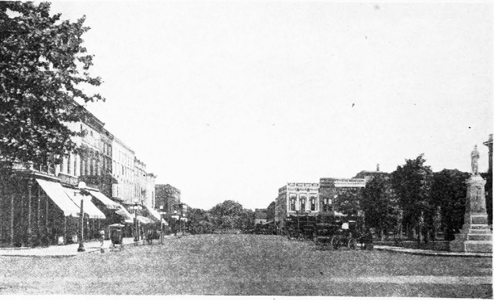

The Burning at Dyersburg: An N.A.A.C.P. Investigation
Sunday, December 2, 1917, immediately after the adjournment of church services, a human being was tortured and burned at the stake in the heart of the town of Dyersburg, Tenn. The victim was a Negro man, thirty years old, who was accused of criminal assault on a white woman of the county.
The Town
Dyersburg, Tenn., is a prosperous town of seventy-five hundred inhabitants, thirty per cent of whom are Negroes. It is the county seat of Dyer County, one of the wealthy counties of the State of Tennessee, and it is situated in the center of the county, which has a population of about thirty thousand. It is seventy-six miles north of Memphis, and two hundred miles south of St. Louis.
There is a good white public school and two colored public schools. The colored public school is divided into two sections, owing to the fact that some of the Negroes live on one side of the town and some on the other. The principal of the white school is paid fifteen hundred dollars a year; the principal of the colored school is paid one thousand dollars a year. There are six white and five Negro churches. The principal of the colored public school bears an excellent reputation among the white people, as do the ministers of the more established Negro churches. There are five colored physicians.
While there are no immensely wealthy citizens, there are a number of men in well-to-do circumstances. Several residences in the town are worth from fifteen to twenty thousand dollars.
Two cotton compresses, a cotton oil mill, several large lumber concerns, and a number of other industries are carried on. The main railroad which passes through the town is the Illinois Central. There are three banks, one of which is national. While some of the colored people have fairly comfortable homes, the Negro populace lives, for the most part, in shacks and cabins, which are not fit for the housing of animals.
The present Mayor, Mayor Evans Carne, began the serving of his third term January, 1918. Under his administration, a new lighting system has been installed, streets have been opened, graded, and paved, and many other improvements have been made. It is stated that Mayor Carne has done more for the uplift of the town than any other Mayor.
Lation Scott
The Negro, who was burned at the stake in Dyersburg on December 2, was named Lation Scott. He also went by the name of Ligon Scott.
He had been employed during the crop season for about two years as the assistant of a white man, who rented and farmed a small section of a larger farm. This farm was in the Fourth District, two miles northeast of Dyersburg. The white farmer had been previously employed as driver of an express wagon; at the time of the crime he was employed as freight handler at the Dyersburg Depot.
It is assumed that the white farmer thought he could make more money, after crop season was over, by working in town, leaving the Negro to do the work on the farm. The farmer was, himself, under thirty years of age. His wife was twenty-four. They had been married four years and had two children, one of whom was the particular pet of Lation Scott.
The Negro was thirty years old, six feet and one inch tall, and weighed one hundred and fifty pounds. Accounts as to his intelligence vary widely. One report asserts that he was almost half-witted. Others attribute to him the intelligence of the average country Negro. A man who knew him states that his head was not well formed. Mr. States Miller, a white man who conducts a hardware store on the south side of the square in Dyersburg, and for whom he worked on a farm for a year or more, says that he regarded him as one with the average intelligence. He also says that during the time he worked for him no criminal or dishonest tendencies manifested themselves.
He had the reputation of being a splendid hand at doing general housework, or “spring-cleaning,” and a short time prior to the crime, of which he is accused, had done work of this sort for a prominent woman of Dyersburg. She states that she was alone in the house with him for two days. No trouble, however, resulted.
In addition to farming and the doing of odd jobs, he was a preacher. While some claim that he was a Baptist, or Methodist, Mr. John M. Tarrant, of the Dyer County Exemption Board, states positively that he was a Holy Roller. This sect is very strong among the Negroes and poorer white people in West Tennessee, and has been extremely active for the past few years. It is more than possible that he was a Baptist, and “went over” to the Holy Rollers.
The emotionalism of this sect is extreme. They claim the “gift of tongues,” and make a practice of going into trances. They jump, jerk, shout, sing, and do what is known as a “Holy Dance.” The white people who belong to this sect are, for the most part, inhabitants of the back country regions. It is generally felt among the more intelligent citizens that membership in the sect unfits a person for steady work, and effort is made to prevent reliable servants from joining it.
It was reported that he was a victim of an advanced case of syphillis. This story was widely circulated and unquestionably served to further inflame the passions of the white men who were searching for him. He was included in the selective draft. He did not sign his name to his examination blank, having made a mark instead. The investigator for the National Association for the Advancement of Colored People visited the office of the Exemption Board and found that he was not exempt, but had passed the physical examination, and expected to be called for service at any time. He had recently been to the office to inquire when he would probably be called. At an earlier date, his employer had been at the office for the purpose of making the same inquiry, not wishing to lose the Negro’s services before his crops were laid by.
Surprised to find that he was not exempt from service, as had been reported, the representative of the National Association repeated to the examining physician, who was present at the time, the report which had been accepted by the community, asking if it were then not true that he was in an advanced condition of venereal disease? The physician replied shortly that it was not true, or he would not have passed the physical examination.
The Crime
The family for whom Lation Scott worked lived in a two-room box house. It is said that he sometimes slept in one of the rooms.
During the day, while the farmer was in town at work, he worked on the farm. There was no one else on the place except the wife of the farmer and their two small children, both under four years of age.
On the day of November 22, when the crime was committed, the wife of the farmer was engaged in picking cotton bolls from stalks, which had been brought in from the field to be picked in the house.
Coming into the house, Scott approached the woman, when she was standing with her back turned, and threw a rope about her neck. He then bound her and, it is said, gagged her. He had either locked the older child in the barn before coming into the house, or else he went out and did so after tieing the woman, so that she could not escape. The report states that she begged for her life. He granted her plea on the condition that she would not tell what had occurred. It is, also, thought to be true that he granted her request because of his affection for the child.
When he had left the place the woman ran out into the road, being apparently not tied to the extent of not using her limbs, and reported the occurrence to passers-by.
The news spread rapidly; parties of men set out at once to apprehend the Negro. From that day until the first of December, when he was arrested, posses of enraged white men hunted him through the country with bloodhounds.
For ten days he escaped detection, passing from house to house of colored friends and taking his way through the country. He could have gotten completely out of the community in that time, but this does not seem to have occurred to him.
Descriptions of the Negro were published broadcast and a reward of two hundred dollars was offered for his apprehension. Feeling became very intense throughout Dyer and the adjoining counties. It was well known that if he were caught, he would be lynched. There seems to have been no question of this course on any side.
He was recognized on the afternoon of Saturday, December 1, by a section foreman near Jackson, a distance of forty-nine miles from Dyersburg. He was arrested by this foreman and turned over to Sheriff Perry, of Madison County, of which Jackson is the county seat. Sheriff Perry notified Sheriff Bryant of Dyer County. Sheriff Bryant went at once to Jackson.
From that place Sheriff Bryant took the Negro to Union City, a town sixty-eight miles north of Jackson, and a point much used as a junction between Dyersburg and other places. Here he was put in jail. The following morning, when the Sheriff returned home, he found that news of the Negro’s whereabouts was known, and dispatched Deputy-Sheriff Cope Pursell and nightwatchman John Finney to Union City for the Negro. They were accompanied by Joe Curry, an undertaker, who owned and drove the automobile in which they made the trip, and Milton McGee, brother-in-law of the Sheriff.
They took him from the Union City Jail, which is a strong, substantial building, and started through the country with him. It is probable that some members of the mob had left Dyersburg before the officers did. The road which they took from Union City leads direct to Dyersburg.
Definite news of the Negro’s whereabouts seems to have spread rapidly. Automobiles began pouring toward Union City and into Dyersburg from the surrounding country. Twenty-five or thirty cars, crowded with men, went to meet the car of the officers, in whose charge the Negro was placed, with the purpose of getting possession of him. Seven-passenger cars were seen carrying twelve men. People stood on the running boards.
The cars carrying the mob were left at a safe point. The passengers hid in the woods which bordered the road. At a point in the Obion River bottom, between the towns of Trimble and Obion, they swarmed out of the cane-brakes and took possession of the Negro. One of the officers states that it was very muddy at this point, and that the automobile in which they were riding was running slowly.
The Negro was transferred to another car; then the whole party raced toward Dyersburg.
In the meantime, the public square of Dyersburg had become packed with automobiles and people. As each car came in sight the crowd surged toward it, in search of the Negro.
A determination seems to have gotten abroad among some citizens to give the Negro a “trial.” A list of twenty-five or thirty names had been made, and the citizens to whom the names belonged were asked to serve on a jury. Twelve agreed to do so.
It was feared that the heated temper of the crowd would not permit of even a mob-trial. A prominent and popular citizen was asked to address the crowd, asking that the Negro should be given a trial. He did so, speaking from a point near the court house. It was agreed that this plan should be carried out.
Thirty minutes later the car carrying the Negro arrived in Dyersburg. Avoiding the streets which led to the court house from the north and east, along which the crowd naturally expected the car to arrive, it circled westward and came up to the south entrance of the court house.
The “Trial”
The Negro was carried into the court room and the jury took its seat. The room and the entire building were packed with people. Many stood on tables and backs of benches.
Mr. David Moss, manager of the Phoenix Cotton Oil Mill, a prominent citizen of the town, acted as spokesman. He told the Negro to stand up. Scott stood up.
“Are you guilty or are you not guilty?”
Scott replied that he was guilty. In answer to inquiry the jury responded that it found him guilty. Mr. Moss then turned to the crowd and spoke for six or eight minutes, importuning the men to be moderate. He asked them to remember that it was Sunday, and stated that the reputation of the county was at stake. It is reported by some that he then appealed to the woman’s husband to prevent the mob from burning the Negro. The woman’s husband, however, did not respond to this appeal. It is reported that it was his wish, as well as the wish of the woman herself, that the Negro be burned at the stake.
The Burning
Lation Scott was taken charge of at once by leaders of the mob, who carried him to a near-by vacant lot, the corner of which adjoins the public square, and which is within a stone’s throw of two churches and the residences of several ministers, as well as of the Mayor of the town. It is the property, jointly, of several sisters, prominent women of Dyersburg. The court house and the post office, attractive new buildings, are in sight of the spot.
The Negro was seated on the ground and a buggy-axle driven into the ground between his legs. His feet were chained together, with logging chains, and he was tied with wire. A fire was built. Pokers and flat-irons were procured and heated in the fire. It was thirty minutes before they were red-hot.
Reports of the torturing, which have been generally accepted and have not been contradicted, are that the Negro’s clothes and skin were ripped from his body simultaneously with a knife. His self-appointed executors burned his eye-balls with red-hot irons. When he opened his mouth to cry for mercy a red-hot poker was rammed down his gullet. In the same subtle way he was robbed of his sexual organs. Redhot irons were placed on his feet, back, and body, until a hideous stench of burning human flesh filled the Sabbath air of Dyersburg, Tenn.
Thousands of people witnessed this scene. They had to be pushed back from the stake to which the Negro was chained. Rooftops, second-story windows, and porch-tops were filled with spectators. Children were lifted to shoulders, that they might behold the agony of the victim.
A little distance away, in the public square, the best citizens of the county supported the burning and torturing with their near-by presence.
The Memphis, Tenn., News-Scimitar says:
Not a single cry for mercy was ever uttered by Scott. His fortitude struck even the mob workers as uncanny. No one offered a plea for the Negro after he confessed.Not a domino hid a face. Everyone was unmasked. Leaders were designated and assigned their parts. Long before the mob reached the city the public square was choked with humanity. All waited patiently, omen, with babies, made themselves comfortable.
At last the irons were hot.
Have you anything to say?”
A meek voice mumbled inaudibly. The Negro made a speech, but few caught the portent.
A red streak shot out; a poker in a brawny hand was boring out one of the Negro’s eyes. The Negro bore the ordeal with courage, only low moans escaping him. Another poker was working like an auger on the other orbit.
The smell of burning flesh permeated the atmosphere, a pungent, sickening aroma telling those who failed to get good vantage points what their eyes could not see. Smoothing irons were searing the flesh.
Swish. Once, twice, three times a red hot iron dug gaping places in Lation Scott’s back and sides.
Fetch a hotter one,” somebody said. The execution went on.
Now someone had another poker—jabbing its fiery joint into the ribs of the doomed black.
Then rubbish was piled high about the agonized body, squirming beneath its load.
Someone struck the match—they say the husband of the assaulted woman applied it—and smoke began to curl upward into a blue sky. The flames gathered momentum, engulfing the body. The fire seemed to groan, but it was Lation Scott.
More and more wood and rubbish were fed the fire, but at three o’clock Lation Scott was not dead. Life finally fled at four o’clock.
The executioners departed, leaving only the morbid. Women, who had left their dinners in the making, hastened home. Children, who had tarried on the way home from Sunday School, scurried away.
Women scarcely changed countenance as the Negro’s back was ironed with the hot brands. Even the executioners maintained their poise in the face of bloody creases left by the irons—irons which some housewife has been using.
Three and a half hours were required to complete the execution.
Dyersburg Sentiment
Public opinion in Dyersburg and Dyer County seems to be divided into two groups. One group considers that the Negro got what he deserved. The other group feels that he should have had a “decent lynching.” Numbers of prominent Dyersburg citizens are of this second group. They say they thought the Negro was going to be given a “decent lynching,” and that they consider the burning and torturing a disgrace to the community. By this is meant a quick, quiet hanging, with no display or torturing.

Dyersburg, Tenn.
The identity of the mob leaders is known all over Dyer County. From all accounts, they are citizens of doubtful reputation, backed up for this occasion by the sentiment of the community at large.
A prosperous citizen made the remark that these men were no better than the Negro. He was threatened at once with lynching. This remark has, however, been made by others, as well as by the man threatened.
Street talk in Dyersburg on Monday had not yet been touched by reflection. One man, who had been out of town on Sunday, was heard to say with gusto: “The best part about it was the burning. This hanging kills too quick. If I’d been here I’d have helped.”
Another commented: “It was the biggest thing since Ringling Brothers’ Circus came to town.”
A few people—mostly women—said: “It was terrible.”
Many citizens seem to have the psychology of having performed an unpleasant duty. One citizen said: “People here can do a thing like that, and then forget all about it.”